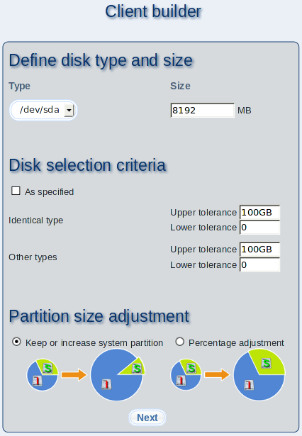

Please enter the preferences of the hard drive for the master client. You have to enter these values because there can't be gathered any hardware information about the master client. Select the hard disk type (IDE, SCSI) and size. The defined size should be the approximate disk size of your real clients.
Subsections
dodger
2014-01-22